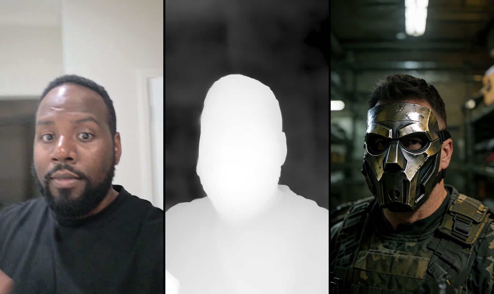
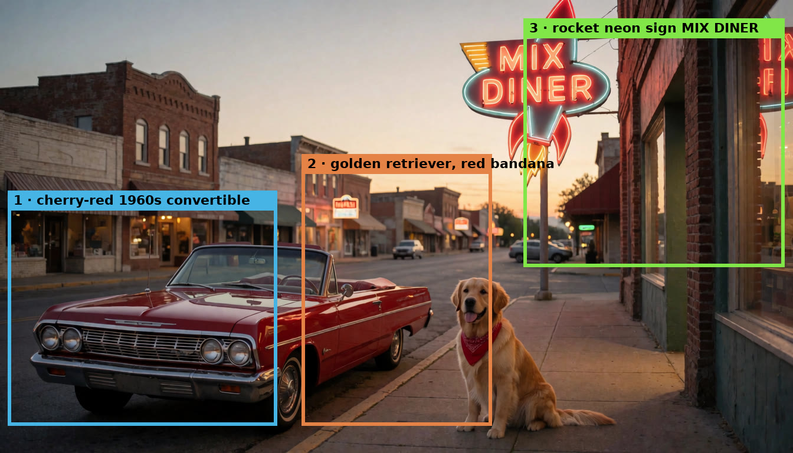

Create images
Generate with Krea 2, optimized sampling, source matching, depth guidance, LoRAs, and prompt assistance.

Windows · NVIDIA · Local generation
Leading local models, optimized settings, and a focused workspace for creating images and video without building every ComfyUI workflow yourself.


A different local AI workflow
Most local generation tools assume you are sitting at the desktop. Mix Studio is designed so the desktop can stay with the GPU while the interface goes wherever you do.
Curated for better results
Mix Studio starts with carefully selected models and practical, workflow-tested defaults. You get strong results quickly, while advanced controls remain available when you need them.

Generate with Krea 2, optimized sampling, source matching, depth guidance, LoRAs, and prompt assistance.


Edit with references, masks, smart selection, camera variants, and Continue Edit, or expand a source while preserving its detail.

Lay out prompt regions, references, and LoRAs visually for deliberate compositions in a single generation.
Work with LTX, Wan, 10Eros, and SCAIL using Face ID, your own lipsync audio, motion transfer, and interpolation.
Upscale with tuned SeedVR2 or Ultimate SD profiles, then reveal, zoom, and pan across details before exporting.
Search, sort, like, group, continue editing, document, and mirror exports from the mobile or desktop library.
Made in Mix Studio
Every clip and composite below was generated locally through Mix Studio's tuned workflows: edits that keep the scene, motion transfer from phone clips, image animation, and box-directed compositions.
A phone clip supplies the movement. SCAIL 2 carries its timing and pose into a newly generated subject.
The driving clip holds the performance while the subject and visual treatment change around it.
Motion, camera direction, atmosphere, and sound are generated together in one pass.
 01 Original02 Edit
01 Original02 EditStart with a photo, make a precise instruction edit, then carry the idea into a moving, talking study.
Each box carries its own prompt, and optionally its own LoRA or reference image.

Car on the left, dog in the middle, neon rocket sign on the right, all in a single generation.

Source → Depth Anything V3 map → re-imagined scene. Every armchair and beam stays in place.

A character LoRA swapped into the masked area while the wave doesn't move a drop.
The subject and movement stay readable while the entire visual language changes.
The original center holds while the room expands naturally on both sides.
Useful when you need it
Profiles, contextual guidance, and dependency checks are close at hand without taking over the creative workspace.

Optional PINs keep galleries, folders, presets, and history separate for each person.

Focused tips explain gestures and controls when they become useful.

Each workflow reports the models and nodes it needs, with setup actions in the same UI.
Quick start
The installer gets you into Mix Studio before asking you to choose models or workflows.
install.batMix Studio downloads, starts, and opens in your browser with a ready Owner workspace.
Install only that workflow, use Quick setup for the defaults, or open the full guide without losing your prompt.
Install Tailscale on both devices, open the private Mix Studio URL, and add it to your home screen.
Hardware-aware setup detects GPU memory and system RAM, reuses models already registered through ComfyUI, supports existing or manually selected ComfyUI folders, and warns before a difficult choice. The bootstrap retrieves the public Mix Studio repository; ComfyUI, models, and nodes download only after you choose an in-app setup option. The uninstaller leaves shared ComfyUI files and models in place.
Desktop power, mobile freedom